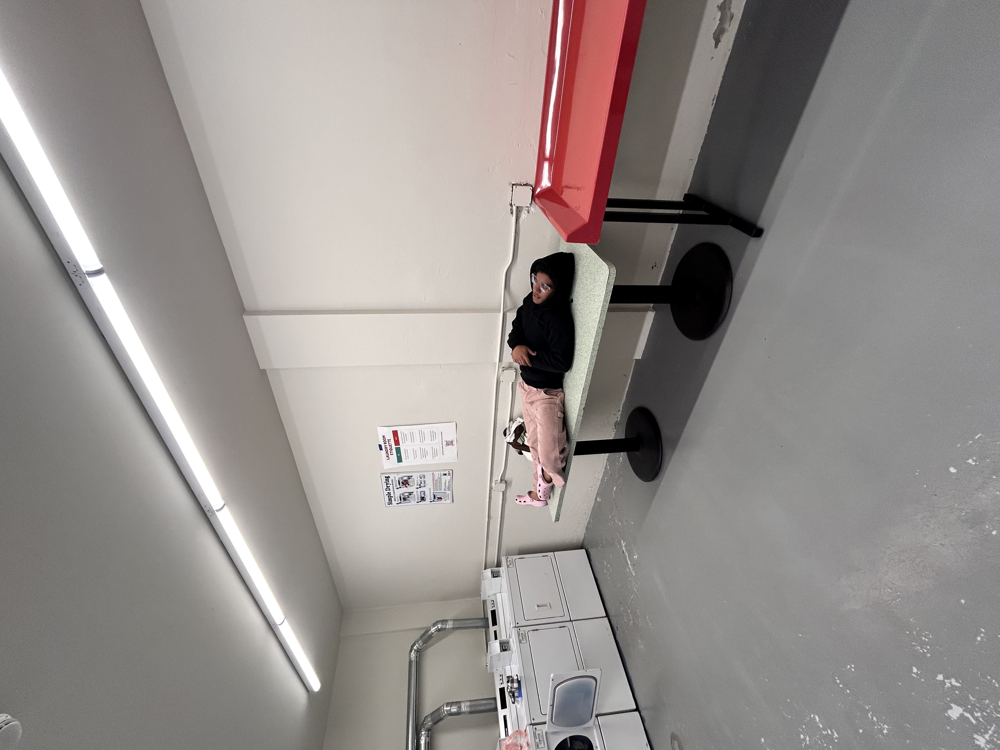
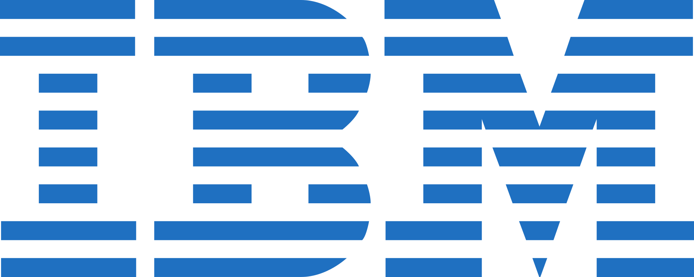
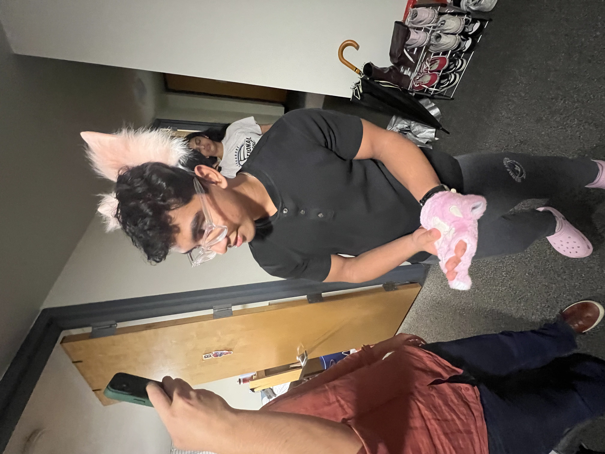
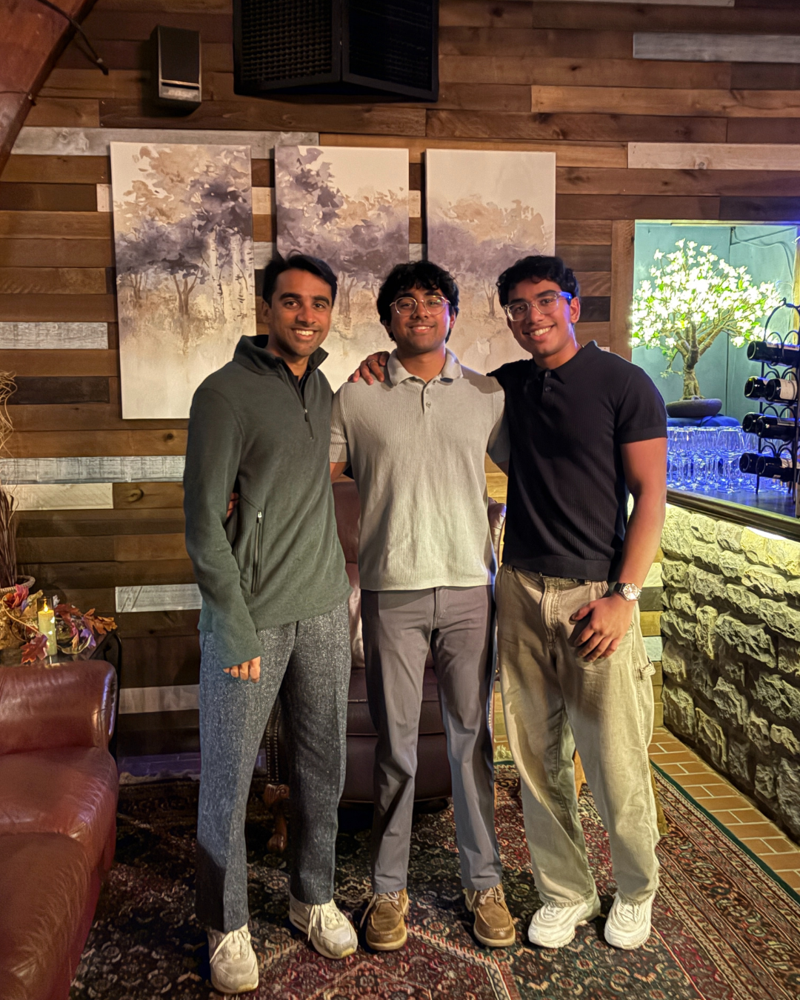

50%
Less API load
Optimized search scaling in Circular, cutting route-generation attempts 40% while holding ±1% distance accuracy.
CS & Applied Mathematics, Stony Brook ’27
Machine learning research, iOS, and developer tooling — shipped to real users, measured honestly, and rebuilt when the numbers say so.
Built, researched and taught at
Most student projects die at the demo. They work once, on one machine, for one person. I care about the part that comes after — the tests, the latency, the user who opens it on a Tuesday and expects it to work. That is the only part that counts.
Experience
Research, product, and teaching. Every one of them came down to explaining a hard thing clearly and then making it run.
North Atlantic Industries · Bohemia, NY
IBM · San Francisco, CA

Stony Brook University, College of Engineering
Applying deep learning to problems in the engineering college — model design, training runs, and the unglamorous work of making results reproducible.
AI Community @ SBU · 800+ members
Directed 15+ workshops and guest sessions, secured $2K+ in sponsorships, and built Q-Learning and DQN models to teach reinforcement learning to 80+ peers.
Lavner Education
Taught coding, robotics, and game development to K–12 students — the fastest way to find out whether you actually understand something.

LightBox EDR
Built ETL pipelines and geospatial tooling in Python and ArcGIS to process environmental site data.

Receipts
Every figure below has a commit, a dashboard, or a race bib behind it.

50%
Optimized search scaling in Circular, cutting route-generation attempts 40% while holding ±1% distance accuracy.

800+
AI Community @ SBU. Fifteen workshops, $2K+ in sponsorship, and an RL curriculum taught to 80+ peers.
4:54
Finished August 2025 with primary ciliary dyskinesia. The training app on this page is the one I used to get there.
Projects
One iOS app I trained a marathon on, one tool that cleans up after data scientists, and one server that gives Claude a research library.


Stack
Listed by how often I actually open them, not by how they look on a resume.
Education
B.S. Computer Science (accelerated) & Applied Mathematics and Statistics
Data Structures & Algorithms · Principles of Programming Languages · Systems Fundamentals · Applied Linear Algebra · Discrete Mathematics · Computational Geometry · Graph Theory & Combinatorics · Probability & Statistics · Calculus III
Project Manager of an 800-member AI community. San Francisco Marathon finisher. Varsity wrestling, track and volleyball. Violinist in regional and school orchestras.
Off the clock
Running, cooking, my brothers, and a little sister who reminds me to stop working.


